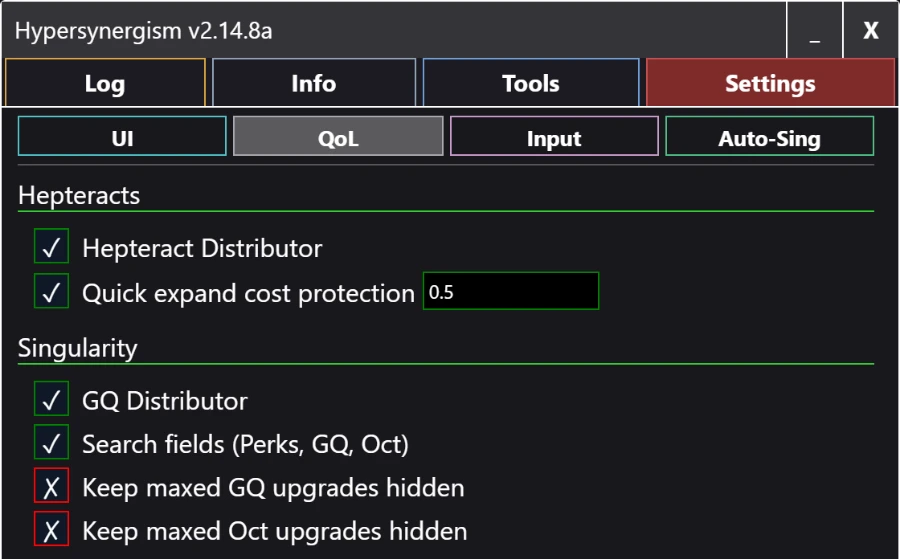

Settings reference

The mod’s 96 settings: the Settings tab’s pages in the order the tab shows them (open the mod’s panel from its icon at the top left of the game), then what the mod saves from elsewhere. Each row links to the feature that explains it; the grey name under a setting is its name in the mod’s files, as a backup or the Log shows it.
Defaults are the mod’s initial values: a saved choice, a migration or another setting can change what you see.
UI
| Setting | Default | Feature |
|---|---|---|
| Dialogs & notifications | ||
Hide game dialogshideGameDialogs | Off | Remember dismissed game dialogs |
Show as notificationshideGameDialogsNotify | Off | Show suppressed alerts as notifications |
Notification opacitysyncNotificationOpacity | 0.6 | Notification opacity |
| Game load | ||
Auto-dismiss offline popupautoDismissOfflinePopup | On | Optional offline-popup dismissal |
Reload when the loader starts late (Tampermonkey loader only)reloadOnLateLoaderStart | On | Recover when the browser loader starts late |
| Header & tabs | ||
Edit game headereditGameHeader | — | Header pencil and editor shortcut |
Remember last used subtabrememberSubtabs | On | Remember each tab's last subtab |
Grouped Stats for Nerds liststatsForNerdsGroups | Off | Grouped Stats for Nerds list |
QoL
| Setting | Default | Feature |
|---|---|---|
| Game data | ||
Game Data Sniffing (GDS) (bookmarklet players only)useGameData | On | Game Data Sniffing and live-game access |
| Hepteracts | ||
Hepteract DistributorenableHepteractDistributor | On | Hepteract Distributor with saved ratios |
Quick expand cost protectionexpandCostProtection | 0.5 | Configurable quick-expand cost protection |
| Singularity | ||
GQ DistributorenableGQDistributor | On | GQ Distributor with saved upgrade ratios |
Search fields (Perks, GQ, Oct)singularitySearch | On | Search the singularity perks and upgrades |
Keep maxed GQ upgrades hiddenhideMaxedGQUpgrades | On | Remember hidden maxed GQ upgrades |
Keep maxed Oct upgrades hiddenhideMaxedOctUpgrades | On | Remember hidden maxed Octeract upgrades |
| Ambrosia | ||
Keep tree levels shownpersistentAmbrosiaLevels | On | Keep Ambrosia upgrade levels visible |
Add+Time loadouts auto-switchaddTimeAutoLoadouts | Off | Separate ADD and TIME Auto-Loadouts |
ADD loadoutautoLoadoutAdd | — | Separate ADD and TIME Auto-Loadouts |
TIME loadoutautoLoadoutTime | — | Separate ADD and TIME Auto-Loadouts |
Ascension loadout auto-switchascensionAutoLoadout | Off | Ascension loadout auto-switch |
Ascension loadoutautoLoadoutAscension | — | Ascension loadout auto-switch |
| Timed save export | ||
Export the save every X minutesautoExportSave | 30 | Export every X minutes |
Choose folderautoExportSaveFolder | — | Choose and remember an export folder |
✕autoExportSaveForgetFolder | — | Choose and remember an export folder |
Keep only the last X filesautoExportSaveKeep | 20 | Keep only the last X timed-export files |
Export loadoutautoExportSaveLoadout | — | Dedicated Ambrosia export loadout |
Input
| Setting | Default | Feature |
|---|---|---|
| Mouse | ||
Repeat hover (hold left Shift)reactiveMouseHover | 0.2 | Repeat hover while holding left Shift |
Auto click (hold left Ctrl)autoClick | 0.15 | Auto-click while holding left Ctrl |
Skip risky buttonsautoClickIgnoreElements | On | Auto-click while holding left Ctrl |
Auto-Sing
| Setting | Default | Feature |
|---|---|---|
| Auto-Sing | ||
Start/Stop Auto-Sing (S216+)startAutosing | Off | Strategy-driven singularity farming |
Singularity to farmsingularityNumber | 200 | Strategy-driven singularity farming |
Keep the PC awakeautosingKeepAwake | On | Keep the PC awake |
| Diagnostics | ||
Record step timingsautosingStepTimings | Off | Step timings |
Full log during Auto-SingautosingFullLog | Off | Color-coded mod log and diagnostics |
| Strategy | ||
Auto-Sing StrategyautosingStrategy | 1.TAS_v3.2 | Create, copy, edit, import, export and delete strategies |
✏️ EditeditAutosingStrategy | — | Create, copy, edit, import, export and delete strategies |
➕ CreatecreateAutosingStrategy | — | Create, copy, edit, import, export and delete strategies |
🗑️ DeletedeleteAutosingStrategy | — | Create, copy, edit, import, export and delete strategies |
📥 ImportimportAutosingStrategy | — | Create, copy, edit, import, export and delete strategies |
📤 ExportexportAutosingStrategy | — | Create, copy, edit, import, export and delete strategies |
| Ambrosia loadouts | ||
ObtainiumautosingObtLoadout | — | Six configurable Ambrosia roles |
Hyperflux (H)autosingEarlyCubeLoadout | — | Six configurable Ambrosia roles |
3-7D CubesautosingLateCubeLoadout | — | Six configurable Ambrosia roles |
QuarkautosingQuarkLoadout | — | Six configurable Ambrosia roles |
OfferingsautosingOffLoadout | — | Six configurable Ambrosia roles |
AmbrosiaautosingAmbrosiaLoadout | — | Six configurable Ambrosia roles |
Don't switch ambrosia loadoutsautosingNoAmbrosiaSwitch | Off | Don't switch Ambrosia loadouts |
| Advanced | ||
3-6D Cube opening %autosing3to6DCubeOpeningPercent | 80 | Advanced run settings and reset to defaults |
Tesseract building auto-buy %autosingTessBuildingAutoBuyPercent | 50 | Advanced run settings and reset to defaults |
Auto-challenge start timersautosingAutoChallTimerStart | 0.1 | Advanced run settings and reset to defaults |
Auto-challenge exit timersautosingAutoChallTimerExit | 0.2 | Advanced run settings and reset to defaults |
Auto-challenge enter timersautosingAutoChallTimerEnter | 0.1 | Advanced run settings and reset to defaults |
Reset to defaultresetAutosingAdvanced | — | Advanced run settings and reset to defaults |
Saved choices and internal state
Not in the Settings tab: choices made in the header’s edit mode, a tool window or a checkbox, and state the mod keeps between sessions. The feature says where each is set.
| Setting | Default | Feature |
|---|---|---|
| Header customization | ||
Keep my header layout when a save is loaded (checkbox under Load from file, and in Tools > Import from file)keepHeaderLayoutOnImport | Off | Keep your header when loading another save |
Ambrosia loadout slots shown in the header (block next to the header's edit tray, 16 = all)headerAmbrosiaSlotsShown | 16 | Choose how many loadout slots to show |
Singularity module: Elevator popoversingularityHeaderElevator | On | Singularity Elevator from the header |
Ambrosia minibars borderambrosiaMinibarBorders | Off | Optional minibar frame |
Automation quick barenableAutomationQuickBar | On | Automation quickbar with mixed-state indicators |
Match the octeract header icon sizematchOcteractIconSize | Off | Match Octeract icon size |
Match the octeract header textmatchOcteractText | Off | Match Octeract unit text |
Center quick barscenterQuickbars | Off | Automation quickbar with mixed-state indicators |
Remove the gap below the headerremoveHeaderGap | Off | Remove unused space below the header |
Hide the header's ambrosia bar iconheaderHideLoadoutIcons | Off | Hide the leading Ambrosia bar icon |
Fit the ambrosia loadout slots to their cellheaderFitLoadoutSlots | On | Fit loadout slots to their cell |
✎ Header edit buttonheaderEditButton | On | Header pencil and editor shortcut |
Long press to edit the headerheaderLongPressEditing | On | Optional long-press editing |
Header top row at the bottomheaderStatsAtBottom | Off | Move the top row to the bottom |
| Corruption & challenge displays | ||
Compact progress text in the game's challenge modulescompactChallengeText | Off | Compact the game's own challenge modules |
Challenge progress module in the headerchallengeProgressHeader | On | One module for all active challenges |
Challenge progress module: layoutchallengeProgressLayout | line | One module for all active challenges |
Challenge progress module: detailschallengeProgressDetails | completions | One module for all active challenges |
Challenge progress module: CØ outside challengeschallengeProgressShowNone | Off | One module for all active challenges |
Corruption module: next level and controlscorruptionHeaderControls | On | Current and next corruption level |
Corruption module: level controls in the modulecorruptionHeaderInline | On | Corruption level controls in the module |
Keep the corruption module visiblecorruptionHeaderAlwaysShown | On | Keep corruption visible before C11 |
| Hepteracts & Platonic upgrades | ||
Hepteract Distributor panel openhepteractDistributorOpen | Off | Hepteract Distributor with saved ratios |
Hepteract Distributor: allow partly filled metershepteractDistributorAllowPartial | Off | Optional partly filled meters |
Hepteract Distributor: use singularity reducershepteractDistributorUseReducers | Off | Temporary singularity reducers and Talisman Power |
Hepteract Distributor: replace the ambrosia tree for Talisman Power alonehepteractDistributorTalismanAlone | Off | Temporary singularity reducers and Talisman Power |
Hepteract Distributor saved ratioshepteractDistributorRatios | — | Hepteract Distributor with saved ratios |
Hepteract Distributor: percentage of hepteracts for Overflux OrbshepteractDistributorOrbsPercent | 0 | Buy Overflux Orbs first |
Hepteract Distributor: hepteracts never spent, as how many powers of ten below the stock's own (1 with 3.4e16 owned keeps 1e15, -1 keeps nothing)hepteractDistributorKeep | -1 | Keep a scaling Hepteract reserve |
| Golden Quarks & shop preferences | ||
GQ Distributor panel opengqDistributorOpen | Off | GQ Distributor with saved upgrade ratios |
Balance total GQ investments toward distributor ratiosgqDistributorBalanceInvestments | On | Balance total investments or split new spending |
Keep the GQ share of skipped distributor upgrades unspentgqDistributorKeepSkippedShare | On | Keep skipped upgrade shares unspent |
GQ Distributor saved ratiosgqDistributorRatios | — | GQ Distributor with saved upgrade ratios |
| Ambrosia loadouts & income | ||
Ambrosia minibars (S25+)ambrosiaMinibars | On | Blue, red and purple progress minibars |
Ambrosia per hour in the header (S25+)ambrosiaRateHeader | On | Expected Ambrosia income per hour |
| Integrated Ambrosia Heater | ||
Heater type loadout selectionsheaterTypeLoadoutSelections | — | Assign, copy and import Heater loadouts |
Heater unticked branchesheaterUncheckedBranches | — | Choose and remember active optimization branches |
Heater ticked branchesheaterTickedBranches | — | Choose and remember active optimization branches |
Heater: workers running at once (select under the heat button)heaterWorkers | 3 | Background heating, progress and cancel |
| Calculations, logs & framework | ||
Calculation tools: list grouped by theme (List order radio buttons above the Tools tab's list)calculationToolsGrouped | On | Calculation picker with component breakdowns |
Show debug logsshowDebugLogs | Off | Color-coded mod log and diagnostics |
Show timestamps in loglogTimestamp | Off | Color-coded mod log and diagnostics |